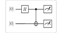

Foundational / 基础 | 难度：初级 | 预计时间：5 分钟
在经典物理中，两个物体的状态是独立的——测量一个不会影响另一个。 但在量子世界中，两个量子比特可以进入一种纠缠态：测量其中一个，瞬间确定另一个的状态。
经典物理无法创建这种"超距关联"
经典通信需要至少 2 比特才能传输 1 比特量子信息
Bell 态是量子纠缠的最基本形式
违反 Bell 不等式，证明量子力学是非局域的
是量子隐形传态、超密编码、量子密钥分发的基础
量子密钥分发（BB84、E91 协议）
量子隐形传态（量子网络的基础）
量子计算中的纠缠资源
from quonic import qgate, qshow
from quonic.gates import CX, H
# 创建 Bell 态
qgate(H, 0) # Hadamard 门：创建叠加态
qgate(CX, 0, 1) # CNOT 门：创建纠缠
qshow() # 测量并显示结果预期输出：
backend: native | shots: 1024
Result:
|00> 512 ( 50.0%) ####################
|11> 512 ( 50.0%) ####################
Step 1: 初始状态
两个量子比特都从 \(|0\rangle\) 开始： \[\begin{equation} |\psi_0\rangle = |00\rangle \end{equation}\]
Step 2: Hadamard 门
对 \(q_0\) 施加 \(H\) 门： \[\begin{equation} H|0\rangle = \frac{|0\rangle + |1\rangle}{\sqrt{2}} \end{equation}\]
所以状态变为： \[\begin{equation} |\psi_1\rangle = \frac{|0\rangle + |1\rangle}{\sqrt{2}} \otimes |0\rangle = \frac{|00\rangle + |10\rangle}{\sqrt{2}} \end{equation}\]
Step 3: CNOT 门
CNOT 门的规则：如果控制比特是 \(|1\rangle\)，就翻转目标比特。 \[\begin{align} \text{CNOT}|00\rangle &= |00\rangle \\ \text{CNOT}|10\rangle &= |11\rangle \end{align}\]
所以最终状态： \[\begin{equation} |\psi_2\rangle = \frac{|00\rangle + |11\rangle}{\sqrt{2}} \end{equation}\]
Step 4: 测量概率
测量时：
\(P(|00\rangle) = |1/\sqrt{2}|^2 = 0.5\)
\(P(|11\rangle) = |1/\sqrt{2}|^2 = 0.5\)
\(P(|01\rangle) = 0\)
\(P(|10\rangle) = 0\)
在 Bloch 球上：
\(|0\rangle\) 在北极
\(|1\rangle\) 在南极
\(H\) 门把 \(|0\rangle\) 旋转到赤道上的 \(|+\rangle = (|0\rangle+|1\rangle)/\sqrt{2}\)
CNOT 门创建纠缠后，两个量子比特的状态不再能用单个 Bloch 球描述——它们成为一个整体，这就是纠缠的几何意义。
from quonic import qgate, qshow # 导入核心 API
from quonic.gates import CX, H # 导入门定义
# qgate(gate, qubit) —— 对指定量子比特施加门
qgate(H, 0) # 对 q0 施加 Hadamard 门
# H 门作用：|0> -> (|0>+|1>)/sqrt(2)
# 效果：创建叠加态
# qgate(gate, control, target) —— 对两个量子比特施加受控门
qgate(CX, 0, 1) # CNOT 门：控制=q0，目标=q1
# 作用：如果 q0 是 |1>，就翻转 q1
# 效果：创建纠缠态 (|00>+|11>)/sqrt(2)
# qshow() —— 运行电路并显示结果
qshow() # 自动选择最佳后端
# 执行 1024 次测量
# 显示测量结果的统计分布| API | 参数 | 说明 |
|---|---|---|
qgate(H, 0) |
H: Hadamard 门, 0: 量子比特索引 | 对 \(q_0\) 施加 \(H\) 门 |
qgate(CX, 0, 1) |
CX: CNOT 门, 0: 控制比特, 1: 目标比特 | 创建纠缠 |
qshow() |
无参数 | 运行电路并显示结果 |
# Phi+ = (|00>+|11>)/sqrt(2)
qgate(H, 0)
qgate(CX, 0, 1)
# Phi- = (|00>-|11>)/sqrt(2)
qgate(H, 0)
qgate(X, 0) # 相位翻转
qgate(CX, 0, 1)
# Psi+ = (|01>+|10>)/sqrt(2)
qgate(H, 0)
qgate(CX, 0, 1)
qgate(X, 1) # 翻转 q1
# Psi- = (|01>-|10>)/sqrt(2)
qgate(H, 0)
qgate(X, 0)
qgate(CX, 0, 1)
qgate(X, 1)# GHZ 态：(|000>+|111>)/sqrt(2)
qgate(H, 0)
qgate(CX, 0, 1)
qgate(CX, 1, 2)
qshow()# 无噪声
qshow(noise=0)
# 5% 噪声
qshow(noise=0.05)
# 20% 噪声
qshow(noise=0.20)BB84 和 E91 协议使用 Bell 态来检测窃听。如果有人试图测量量子态，就会破坏纠缠，通信双方可以检测到。
量子隐形传态使用 Bell 态作为量子信道，可以在不直接传输量子比特的情况下传输量子态。
Bell 态是测试量子硬件质量的金标准。如果硬件不能正确制备 Bell 态，说明有噪声或校准问题。
量子测量有随机性。即使理论概率是 50/50，有限次测量（如 1024 次）也会有统计涨落。增加 shots 数量可以更接近理论值。
可能原因：
噪声（检查是否设置了 noise 参数）
代码错误（确认 H 门在 CNOT 之前）
后端问题（试试 backend=’native’）
Bell 态是 2 量子比特纠缠，GHZ 态是 3+ 量子比特纠缠。GHZ 态是 Bell 态的推广，用于多方量子通信和量子纠错。
检查测量结果：
只有 \(|00\rangle\) 和 \(|11\rangle\)
两者概率接近 50%
没有 \(|01\rangle\) 和 \(|10\rangle\)
如果满足这三个条件，就是 Bell 态。
经典物理中，两个粒子的关联有一个上限（Bell 不等式）。量子力学的预测超过这个上限，实验证实了量子力学的正确性。这意味着没有局域隐变量理论能解释量子关联。
量子比特的基本概念（\(|0\rangle\) 和 \(|1\rangle\)）
叠加态和 Hadamard 门
CNOT 门的作用
量子隐形传态（使用 Bell 态传输量子态）
超密编码（使用 Bell 态传输经典信息）
GHZ 态（多量子比特纠缠）
当前：初级
下一步：中级
from quonic import qgate, qshow
from quonic.gates import CX, H
qgate(H, 0)
qgate(CX, 0, 1)
qshow()from quonic import qgate, qshow
from quonic.gates import CX, H
qgate(H, 0)
qgate(CX, 0, 1)
qshow(noise=0.05)python examples/bell/bell.py